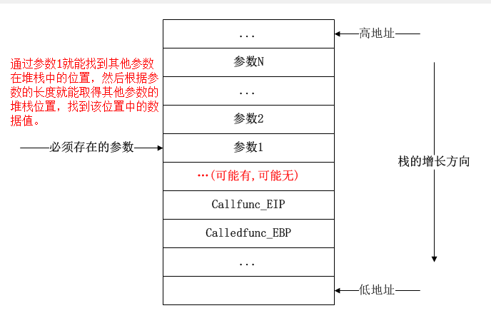

服务器解烦1_异步日志
异步日志的实现详解。
一. Log类
1 | class Log |
1. 单例模式
对于整个服务器程序而言，日志类对象只要一个就够了，这种情况很符合单例模式的设计场景。
如果详细展开单例模式，会有
- 饿汉模式
- 懒汉模式
- 线程不安全写法，
- 线程安全写法
- 双加锁写法（考虑reorder情况）
但是在C++11之后，局部静态的Magic Static（见下解释）特性，帮我们很好的规避了以上情况的讨论，不必再考虑繁复的线程安全和底层优化问题。
If control enters the declaration concurrently while the variable is being initialized, the concurrent execution shall wait for completion of the initialization.
如果当变量在初始化的时候，并发同时进入声明语句，并发线程将会阻塞等待初始化结束。
2. 各参数解释
1 | char dir_name[128]; //路径名,日志文件放在哪 |
3. write_log的形参解释
a. 可变参数概述
最大的问题在于，三个点是什么意思？
实际上，这代表了可变参数，即在此处可以输入任意个参数。考虑printf，scanf等函数，它们也允许用户输入多个参数，其背后就是通过可变参数来实现的。
进一步的，同名不同参数的函数让人联想到函数重载，在C语言当中，通过这样的可变参数从某种角度来说也可以实现重载，但是需要注意的是，可变参数左侧是一定要有参数存在的，这与其底层实现有关。
b.可变参数的底层实现

函数传参要用到栈，栈区的增长是从高地址到低地址的。
如果知道开始位置以及每个参数的类型，那么得到每个参数就不再困难，所以，使用可变参数的时候必须要指定它们上一个参数帮其定位，每次读取的时候指定类型依次读取即可。
c. 可变参数的具体函数
具体见一下代码:
1 |
|
va_list vp创建了一个指向可变参数的指针，但是它还没有明确的地址指向。
使用va_start之后，确定了a是它上一个参数，位置得到了确定。
在循环之中使用va_arg依次进行int类型数据的读取，注意此处的循环次数是由a决定的，所以这里的a，或者说这个指明位置的参数还有指明大小的作用，进一步考虑，在printf中，%d%s这些内容也就是写在我们a这个位置的，它还指明了或者规定了后面需要传什么参数类型，所以这个a是非常重要的。
二. 函数拆解
1. init
Log::init(const char *file_name, int close_log, int log_buf_size, int split_lines, int max_queue_size)
初始化，做了以下几件事
判断最后一个参数max_queue_size是否为0，如果是则同步写日志，否则是异步写日志，将创建一个子线程来写。同时将你输入的参数值作为阻塞队列的大小。
日志文件的缓存区大小
日志文件的最大行数
确定当前日期
确定日志位置，打开日志文件
这里有两个分支需要判断，如果传入的file_name没有斜杠，说明用户传入的只是文件名，那么用时间+文件名作为待会要打开的对象，如果有斜杠，说明还包含了地址，那么应该拆分出来，然后再以地址+时间+文件名（此处的文件名剥离了地址）作为待会要打开的对象。然后直接fopen即可。
2. async_write_log
在init中说到，如果输入的max_queue_size不为0，那么将创造一个工作线程，使用阻塞队列来进行日志文件的读写。其具体代码为：
1 | void *async_write_log() |
3. write_log
void Log::write_log(int level, const char *format, …)
在使用同步操作的过程中，写日志的过程需要我们自己完成， 使用write_log函数来完成。其整个工作过程如下：
- 获取今天的日期
- 根据传入的level判断当前日志是什么级别，但是不会因此有任何程序上的分支做法，仅仅是在日志语句后面插入对应的级别字符串让用户知道。
- 判断是否需要新起一个日志，对应有两种情况
- 当前日志和今天日期不相等
- 当前日志行数已经超过了设定的行数
- 写入用户输入的内容
- 判断异步还是同步写入，异步则直接推入阻塞队列，同步则直接写进文件中。